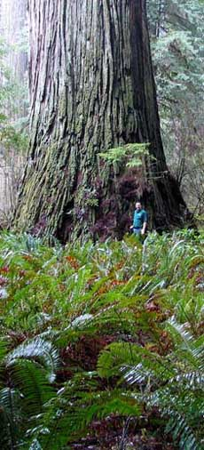
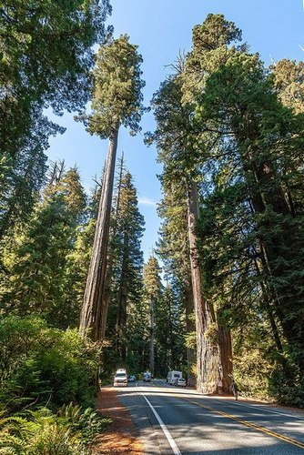
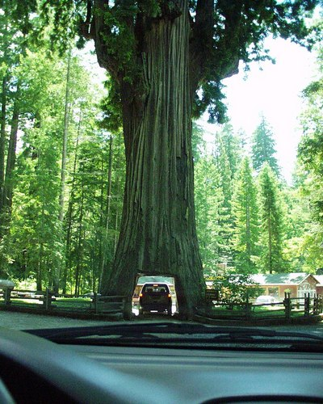

Секвоя вічнозелена
 Єдиний живий вид деревних рослин з роду секвоя (Sequoia) родини кипарисових. Представники цього виду є найвищими деревами на Землі. Вважається, що більше 95 % від первісної частини секвоєвих пралісів було вирубано задля деревини. Два інших роди, мамонтове дерево і метасеквоя у підродині Sequoioideae тісно пов'язані з родом секвоя.
Назва
Спочатку секвої називали каліфорнійськими соснами або мамонтовими деревами, через схожість загнутих догори гілок
з бивнями мамонтів.
Карл Лінней в 1859 р. назвав це дерево на честь англійського полководця Веллінгтона —
«Веллінгтонія велетенська», що викликало невдоволення в американців, які назвали дерево ім'ям свого національного
героя Джорджа Вашингтона — «вашингтонія велетенська». Однак і ця назва не прижилася.
Родову назву було запропоновано австрійським ботаніком Штефаном Ендліхером в 1847 році для дерева, раніше відомого під назвою Taxodium sempervivens D.Don. Ендліхер не вказав її походження. У 1854 році Ейса Грей, визнавав необхідність виділення роду, писав про нову назву, як про «безглузду і немилозвучну». У 1858 році Джордж Гордон опублікував етимологію родових назв ряду родів хвойних рослин, запропонованих Ендліхером, однак пояснення назви «Sequoia» не знайшов.
Ботанічний опис
Секвоя — вічнозелене однодомне дерево.
Крона конічної форми, гілки ростуть горизонтально або з легким нахилом вниз. Кора дуже товста, до 30 см завтовшки, і порівняно м'яка, волокниста, червоно-коричневого кольору відразу після її зняття (звідси англійська назва redwood, «червоне дерево»), з часом темніє. Коренева система складається з неглибоких, широко розкинутих бічних коренів. Листя 15-25 мм в довжину, витягнуте і пласке у молодих дерев, зі стрілками на затіненій нижній частини крони у старих дерев, і лускоподібне 5-10 мм в довжину у верхній частині крони старих дерев. Шишки яйцеподібні, 15-32 мм у довжину, з 15-25 спірально закрученими лусочками; запилення в кінці зими, дозрівання через 8-9 місяців. У кожній шишці 3-7 насінин, кожна з яких 3-4 мм в довжину і 0,5 мм в ширину. Насіння висипається, коли шишка висихає і відкривається.
Поширення та екологія
Поширена в північноамериканських лісах вздовж берега Тихого океану. Росте в Каліфорнії
Ліси секвої вічнозеленої тягнуться вузькою смугою довжиною близько 720 км тихоокеанським узбережжям США від округу Монтерей на півночі Каліфорнії до річки Чітко на півдні штату Орегон. Секвоя вічнозелена потребує дуже вологого клімату, тому не росте від берега далі ніж на 32-48 км, залишаючись у смузі впливу морського туману. Колись секвої разом з іншими представниками таксодієвих були поширені в багатьох областях Північної півкулі, проте останнє заледеніння зберегло їх тільки на західному узбережжі Північної Америки разом з близьким видом секвоядендрон велетенський, мамонтове дерево, або веллінгтонія (Sequoiadendron giganteum), також єдиним представником свого роду, званим іноді секвоя велетенська (S. gigantea).
Культивація і використання
Секвоя вічнозелена є видом з найбільш цінною деревиною для потреб лісозаготівельної промисловості. Практично половина усієї території зростання виду (3640 кв. км) перебуває на території активного лісокористування. Серед багатьох лісозаготівельників, що займались утриманням та заготівлею секвої, виділяється Песифік Ламбер Кампані (Pacific Lumber Company (1863–2008)), походженням з округу Гумбольдт, Каліфорнія, де остання володіла переважно секвойними лісами на площі 810 кв. км. Деревина секвої вічнозеленої високо ціниться за свою текстуру, малу вагу та опірність до гниття. Малий вміст смоли дозволяє поглинати вологу і протистояти пожежам.
Цікава статистика
- Спили величезних стовбурів гігантського дерева секвої досягають 12 метрів у поперечнику
- Найвищу секвою знайдено влітку 2006 року Крісом Аткінсом (англ. Chris Atkins) та Майклом Тейлором (англ. Michael Taylor) в національному парку Редвуд. Висота «Гіперіона» (так було названо дерево) становить 115,5 метра
- Попереднім рекордсменом із живих дерев був «Стратосферний Гігант» в парку штату Каліфорнія Гамболдт-Редвудс, його висота — 112,83 метра
- Висоту в понад 110 м мають 15 живих дерев, а вищих за 105 м — 47 дерев.
- Найвище дерево дугласії — дугласія тисолиста — має висоту 100,3 м.
- У 2004 році журнал Nature написав, що максимальна теоретична висота секвої (або будь-якого іншого дерева) обмежена 122—130 метрами, через гравітацію та тертя між водою і порами деревини, через котрі вона сочиться.
- Найоб'ємніше дерево — «Титан Дель Норте». Його об'єм становить 1 044,7 м³, висота — 93,57 м, а діаметр — 7,22 м.
- Одну секвою спилювали 7-метровою пилкою 17 днів. Для її перевезення знадобилося 30 великих залізничних платформ.